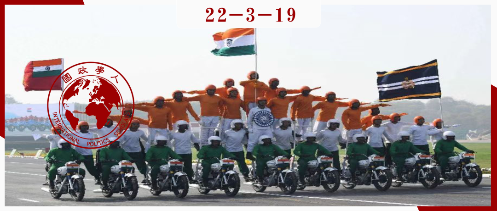

收录于合集

**
**
印度的强国之路：战略文化问题
作者： Sergey I. Lunev，莫斯科国际关系学院东方研究系教授；Ellina P. Shavlay，莫斯科国立国际关系学院英语语言系讲师。
编译： 胡可怡（中国人民大学国际关系学院研究生）
来源： Lunev, S. I.，& Shavlay, E. P. (2021). India as a Global Power: The Strategic Culture Problems. India Quarterly , 77(4), 525–541.

导读
本文通过对印度政治、经济、软实力（文化）等各方面的综合审查，认为当前印度事实上已经具备了作为强国的基本先决条件，只是尚未充分发挥出自己的能力，而战略文化的缺失（包括外交政策与经济战略）是阻碍其获得国际承认之“强国”地位的最大阻碍。尽管存在障碍，作者还是对印度的强国道路持极为乐观的态度，并且认为印度扫除障碍成为真正的世界强国只是时间问题。
自尼赫鲁时代以来，成为“有声有色的大国”便一直是印度孜孜以求的夙愿。2014年莫迪上台后，印度实现大国梦的渴望空前迸发。莫迪政府雄心勃勃地承诺，要使印度超越“制衡力量”（balancing power）的国际角色，发展成一个对国际事务应该如何组织有清晰认识的“领导力量”（leading power），而不仅是一个被动接受现有体系的大国。这也体现出印度正在有意识地努力克服本文所提到的“战略文化问题”，致力于对全球问题提出自己的解决方案。
本文涉及印度的方方面面，点出了一些在考察印度发展现状与前景的过程中值得更加关注的议题领域。但涉及的内容过于宽泛，也显得文章的分析流于简单的归纳与总结。另外，一些结论缺乏更为缜密的逻辑推理，并且体现出一种乐观主义倾向：一方面，作者指出印度发展中存在着诸多问题（例如种姓制度、不平等、贫困人口、军事现代化受阻等）；另一方面，又认为这些问题在印度持续实现增长的情形之下“影响不大”，但对为何“影响不大”，本文并未作过多解释。
摘要
这篇文章聚焦于探讨印度在全球政治中备受争议的强国地位。尽管在各个方面都取得了实实在在的成果，印度在很大程度上仍然被低估甚至被忽视。关于其背后的原因，学者们一般认为存在三个主要因素：社会和经济数据不佳、相对薄弱的全球影响力以及战略文化的缺失。本文认为，战略文化问题是关键，并且该问题正在被补救的过程中。事实上，印度已经具备了作为“强国”的所有先决条件，以及与之相对应的政治、军事、经济和文化能力。印度政府推行具有连贯性的外交政策和经济战略，改变精英的战略思维以进一步挖掘印度的现有潜力以成功提升印度在全球政治中的影响力只是时间的问题。
编译
01
导语 ****
在当下的世界体系之中，半边缘国家扮演着特别的角色，其中印度的作用尤为突出。然而，大多数学者并不承认印度的“强国”（great power）地位，而称之为“二流强国”（second-tier great power）、“崛起国”、“主要大国”或者“区域强国”。这种判定方式与认为印度缺乏必要的“战略文化”的论调有关。的确，印度面临着一些问题，但是该国正在做出努力加以解决。
“强国”一词最早出现在拿破仑战争之后。两百年以来，“强国”的定义以及被认定为强国的国家不断变化。在现实主义范式之中，强国的分类是学术研究的重要议题。从迪斯雷利（Disraeli）以降的大部分专家都同意，大国的主要判定标准是领土大小、人口、资源禀赋、军事实力、经济发展水平、文化和科技潜力，以及开展国内事务的高度独立性与对世界政治施加重大影响的能力。一些学者（例如华尔兹和布赞）添加了其他两个维度：利益相关空间的范围以及国际社会的承认。然而，“利益的地理范围”是一个模糊的标准。区分世界性强国与地区强国通常很容易：与前者不同，后者通常只能对某一特定地区的发展施加影响。只有超级大国才能干预世界各地的政治经济进程——在1960年代至1980年代，只有美国和苏联有这样的潜力。自1990年代以来，唯有美国是真正具有全球影响力的行为体，中国是成为第二个超级大国的唯一有力竞争者。
本文的第一部分梳理了印度实力发展的现状及其当前在世界上的地位；第二部分讨论了印度在成为世界公认强国道路上遇到的障碍；第三部分则侧重于探讨印度战略文化缺乏的问题；结论部分对印度作为强国的前景进行了分析。
02
印度实力的关键支柱
2011年，按购买力平价（PPP）计算，印度的国内生产总值排名位列全球第三。值得一提的是，几乎所有西方专家都预测印度将成为全球增长率最高的国家。内部资源是印度GDP增长的主要支柱，对外贸易和外国投资对印度的重要性相当低，使得该国受世界经济危机的影响较小。
文化活力与科技自主是内生于印度这个国家的本质特点。这些特点，加上大量的高水平专家，有助于该国打破落后状态的恶性循环。在技术方面，印度具备对进口先进技术进行转化并开展自主研发的能力，在信息技术方面取得了许多突破。2019至2020财年，印度的软件出口额达到1470亿美元。
印度目前的经济增长是在恢复其在全球经济中的历史地位。英国经济学家安格斯·麦迪逊估计，在公元1000年，中印两个亚洲大国在世界经济中的份额合计达50%，其中印度占28%，中国占22%。1820年代至1970年代初，两国在世界经济中的份额缩水数倍，在这一时期末一共仅占8%（中国占5%，印度占3%）。许多专家预计，到2050年，印度的GDP将几乎与美国经济持平，约为中国的一半。
03
印度在世界上的地位
印度外交政策中“并存”的几项任务旨在确保该国始终如一地奉行独立的外交政策，增加该国的区域影响力，在国际舞台上发挥作用，加强印度在世界上的权威并获得国际社会认可的大国地位。印度外交的战略目标，即向世界级强国转型，在70多年前印度甫一独立后即已确定。苏联和社会主义阵营的解体，以及不结盟运动的瓦解，致使印度的外交战略一定程度上进行了重新定位，但这种调整涉及的对象主要是实现宏观目标的路径，而不是战略目标本身。
冷战的结束使印度失去了占据东西方中间地位，以利用两种体系之间矛盾的战略空间。最初，印度做出了诸多努力，希望至少维持住不结盟运动的地位。在两极世界崩溃之前，不结盟运动长期是印度外交政策的基石之一，并且作为增加印度全球性事务影响力的主要机制发挥作用。但随后， 印度逐渐意识到，不结盟运动的视野已经明显缩小，增强在南方国家中的地位不足以使印度顺利加入“世界联盟”（world league）。 此外，发展中国家之间日益加剧的分化阻碍了任何单一政治经济合作机制的建立。由此，印度在发展中国家中加强权威的愿望明显削弱，基本抛弃了作为南方国家“利益代言人”的角色定位，在国际舞台中的活动有所减少，外交亦变得更加具有“针对性”。例如，印度开始着手于与东盟进行合作，并积极参与东盟框架下的其他合作机制；这一时期，印度还参与建立了多个平台，包括环孟加拉湾多领域经济技术合作倡议、印度- 巴西-南非对话论坛以及金砖国家等。
进入新世纪以来，情况又逐渐发生了变化。 2014年纳伦德拉·莫迪上台执政之后，印度在前“第三世界”再次变得活跃起来。 一方面，新德里不断尝试利用经济联系、软实力和印度侨民来加强与这些国家的政治关系；另一方面，印度也应用了全新的合作形式、机制和路径。印度设法与世界上的几乎所有国家建立积极关系。根据BBC世界服务民调显示，对于印度在世界政治中的作用，大多数国家倾向于给予肯定。在全球体系中，印度似乎保持着非常稳固的地位，在世界舞台上的权威继续加强。
04
印度的军事实力
从军事角度来看，印度是世界上的主要军事力量之一，现役军人超过140万人，军事预算从1997年的218.5亿美元上升到2019年的713亿美元（仅次于美国和中国，排名第三），进入新世纪以来更是成为了主要的国防进口国。在2010年至2014年间，印度在全球武器进口中所占份额为14%，是沙特阿拉伯（5.6%）和中国（4.4%）的三倍。在2015至2019年，这一份额下降至9.2%，而沙特阿拉伯（12%）位居第一。早在1974年5月，印度就成为了拥核国家。根据斯德哥尔摩国际和平研究所统计，目前印度拥有130-140枚核弹头。印度宣称其核政策由三个部分组成：保持最低限度的必要核威慑（但尚未以任何方式定义）、不首先使用核武器，以及参与《全面禁止核试验条约》。
但总体来看，印度在军事领域仍然存在诸多问题。从步兵的小型武器到海军的潜艇，各类军种都存在武器短缺问题。大多数武器已经过时，更新换代的进展缓慢，同时缺乏足够的资金以全面推行雄心勃勃的军事现代化计划。另外，印度军工联合体的工作开展亦暴露出许多具体缺陷，例如，作战单位缺乏协调；作为国家官方语言的印地语仅是40%印度人的母语，这使得在招募工作中必须部分保留族群语言原则（ethno- linguistic principles）。尽管如此，印度异常快速的经济增长速度使逐步解决上述问题成为可能。即使存在短板，也不得不承认目前的印度拥有训练有素、装备精良的武装力量且稳居世界军事强国前五。
05
文化-文明领域
印度政治制度与西方模式之相似使得美国总统称赞印度为“世界上最大的民主国家”。西方认为，在非西方世界中传播印度的政治经济价值观和民族精神将有助于促进民主化的进程。印度的发展模式符合发达国家的期待，后者亦乐见印度在与中国等非西方大国的竞争之中取得胜利。 相较于崛起的中国，西方世界能够相对平静地接受印度的崛起。
除了政治制度优势，印度的软实力也潜力巨大，其丰富而古老的文化因其对多样性的包容而闻名。电影行业是其软实力的另一重要体现，目前印度是世界上最大的故事片生产国，每年大约制作1500至1800部电影，在中亚、中东、南亚、英国和美国相当流行。
此外，印度菜、印度对发展中国家的援助、印度媒体以及印度侨民等都可作为软实力工具，为该国伸张全球影响力发挥一定积极影响。其中，侨民的作用需要特别加以关注。 现代印度移民浪潮始于1960年代，移民的身份大致可以分为两类：以波斯湾国家为移民目的地的“石油人”（包括工程师和工人，他们的汇款对提高印度生活水平具有重大贡献），和以欧美国家为目的地的“专业人士”（包括知识分子和精英）。 目前，印度的侨民数量达3200 万人（根据国际移民组织的数据，印度海外移民人数排名第一）。在欧美出现了一个强大的印度侨民群体，他们在新的祖国拥有相当优越的社会地位。几乎每个印度精英都有是美国公民的亲戚和朋友，这种纽带对美印关系产生了积极影响。印度侨民被印度领导人视为促进国家利益的极其有效的工具。但同时也应该指出，印度侨民不是一个单一同质的群体，也没有一个共同的组织进行管理。印度人传统上更关注家庭而不是范围更大的社群，这削弱了他们积极参与政治生活的动力。而第二代移民在本质上已经不再是“印度人”，他们不懂语言，不遵守传统的宗教原则，对父母的故乡亦无兴趣。 总的来看，印度侨民之于印度的作用，介于中国侨民（在母国发展种起关键作用）和俄罗斯侨民（几乎完全消散在新家园内）之于其母国发展所起的作用之间。
直到2014年，印度才就软实力出台具体战略。莫迪开始关注与本国历史、文化和宗教相关的软实力领域，不断强调起源于印度的佛教对亚洲国家和平共处与发展的重要性，并利用苏菲派增强与穆斯林世界的关系，同时推广印度教及其身心实践（如瑜伽和阿育吠陀），成功推动2014年联合国大会设立“国际瑜伽日”。在2016年，海外事务部与外交部合并，但侨民的作用具有特殊的地位，莫迪在出访他国期间总是会安排与侨民代表会面。当下的印度有潜力通过对软实力的运用为本国发展带来可观的红利，但这需要一定时间。
06
印度获得强国地位之国际承认的障碍
印度国内存在严峻的社会问题（例如种姓制度、不平等和贫困问题），学者们经常以此为理由拒绝承认印度为“强国”。1950年宪法从制度上废除了种姓，但种姓制度虽遭到削弱却仍然存在。从理想主义和人文主义的角度来看，种姓制度可以视为“遥远过去的遗物”，是印度民主发展之路上的绊脚石。 然而，从实践来看，种姓制度在巩固社会团结、缓解社会矛盾方面发挥着至关重要的作用。 加速的信息全球化对社会弱势群体的影响越来越大，在传统文明价值观瓦解的情况下，未来可能会出现不满情绪的急剧爆发。但到目前为止，积极进行政治参与的达利特人（以前是贱民）的抗议大多采取和平方式（就像印度其他类别的社会抗议一样）。在政府采取措施改善下层民众生活境况的努力之下，不同种姓、城乡人口和地区之间的差距正在缓慢缩小。而印度文明本身的精英主义性质也使民众并未在贫富差距问题上产生严重不满。相较于其他大国，印度的处境显得相对要好。根据世界银行的报告，在美国占总人口10%的富人的收入是穷人的18倍，在印度则是9倍。
就贫困人口数量指标来看，印度贫困人口在本世纪出现了创纪录的下降，但依然严重落后于其他大国。尽管如此，在印度几乎没有出现与对经济状况的不满直接相关的大规模抗议活动，这主要是由于大规模贫困在印度是一种传统，同时民众可以通过投票来抒发不满。经济问题是一个伴生因素，总体而言，印度民众普遍对本国的政治制度感到满意，对社会经济状况不满的人数并没有显著增加。因此可以得出结论： 印度的社会问题并未对国家的政治稳定和经济实力产生严重影响。
07
印度的战略文化
印度强国之路的主要障碍是战略文化的缺乏。“战略文化”来源于重视研究文化变量影响的文化主义研究路径。杰克·斯奈德（Jack L. Snyder）创造了这一术语，将其定义为 “一个国家战略共同体的成员通过指令或模仿而获得的思想、条件性情绪反应和习惯性行为模式的总和” 。该定义显然过于模糊，之后也有学者对其进行发展，但遗憾的是尚未建立起系统的战略文化理论。但是学界基本都赞同，战略文化对国家精英在解决外交和安全问题时的选择起决定作用，而并非只是这些选择的前设条件。
对于印度战略文化缺失的批评是中肯的，当前印度尚未充分认识到作为一个强国，必须在基本问题上采取相当明确的立场。“不结盟”是该国两极时代外交政策的基石，并且依然影响着当今印度的外交政策。依靠其在20世纪60年代（当时印度同时是美国和苏联在亚洲最大的经济援助接受国）的外交经验，印度寻求在美国和中国之间取得某种平衡。当向某一大国的倾斜招致负面影响时，印度便又诉诸其在20世纪70年代的外交经验，目前印度与美俄的关系便是如此。
长期以来， 采取中立立场是印度外交政策的一个显著特征。只有在核心国家利益受到真正威胁的情况下，印度才会选择采取强硬的立场。 在包括大中东在内的特定地区，印度倾向于推行平衡政策。一些研究人员声称，印度正在伊朗和沙特阿拉伯、美国和伊朗、以色列和阿拉伯国家之间进行大区域平衡。 尽管如此，中立的站位并不总为印度带来裨益， 例如在2020年夏，伊朗就因不满印度过于顺从美国的压力，宣布将印度排除在对其具有重要战略意义的恰巴哈尔港（Chabahar port）区域项目之外。
08
经济战略问题
如前所述，不存在一种单一的方法来对“战略文化”这一概念进行定义。尽管如此，几乎所有学者都侧重于关注战略的军事安全和外交政策层面，而往往忽视经济参数。然而，印度的例子生动地表明，鉴于经济在现代世界中的重要性急剧增加，有必要将全球经济安全和经济发展战略纳入对战略文化的探讨之中。而就经济战略而言，印度的立场存在许多问题。
西方世界并不认为印度是一个经济大国，这不仅是因为社会和经济问题，也因为印度复杂的经商环境。根据营商便利指数（Ease of doing business index）排名，印度仅居第63位。就全球竞争力而言，印度位列第68位，明显落后于几乎所有的G20国家。正是国际社会的感知因素加上印度经济的持续孤立及其在国际进程中的薄弱参与，导致对印度潜力的评估不充分。
在缺乏统一经济战略的情况下，要保持有条不紊实施连贯经济举措是很困难的，更不用说印度的政治与经济结构存在严重的机构碎片化，结构性弱点尤为突出。 虽然外交部是该国对外经济战略的决策核心，但商业和工业部、财政部以及石油和天然气部都可以在不征求外交部意见的情况下独立进行决策。
新德里的战略目标是依靠不断增长的经济潜力提高在世界政治中的影响力。在印度石油和天然气自身储备不断减少的情况下，这注定了印度决策层会特别关注能源安全问题，并将其视为影响经济发展的重要因素之一。2018年，印度80%以上的石油需求来源于进口，国内产量的增长越来越跟不上需求的增加。阿拉伯国家是印度石油和天然气的主要供应商，对海湾国家的严重依赖要求印度实现碳氢化合物进口的多样化，以规避中东地区局势不稳带来的负面影响。然而，由于各种原因，尤其是在各机构缺乏统一与明确方针政策的情况下，新德里在这方面的努力成效不甚明显。
缺乏 “自上而下”深思熟虑的发展战略，导致印度政府无法有效抓住现有的机会促进国家的社会经济发展。但是即便如此，印度也取得了相当可观的成绩。尽管改善印度战略文化经济层面的挑战依然存在，本文并不赞同一些学者认为战略文化是影响印度找到合适国际定位之长期障碍的观点。原因在于， 即使问题存在，也并非十分严重，并且能够被修正。 因此， 印度不愿意采取更果断的外交政策，不是因为实力不足，而是因为对自身实力的认识不全面。 有趣的是，领先于印度的中国，在新世纪的第二个十年前也一直遵循着极其谨慎的外交政策路线。由此可以， 印度的蜕变也应该只是时间问题。
09
结论：印度是强国吗？
就客观参数而言，印度已经成为一个强国，并且在整体上领先于传统的全球影响力中心——英国和法国。然而，国际社会仍然不愿意（或无法）接受印度不再落后，并且已经成为全球领先强国的事实。
一方面，西方世界不愿意承认印度的全新地位，可能与心理方面有关。欧洲长期以来以最有力的方式决定着世界体系的发展，世界重心向印太地区的转移，以及亚洲国家相较于欧洲大国的新兴优势并不符合西方传统的规范和思维方式。历史上有很多传统行为体不能接受新现实的例子，例如在第一次世界大战之前，欧洲的精英几乎无人研究美国在国际关系中的重要作用，尽管当时美国占世界经济的份额甚至比现在更大。
另一方面，尽管印度已经具备了作为强国的基本先决条件，但它还未充分发挥出自己的能力，并且仍然倾向于在全球政治和地区冲突中采取灵活、零碎且不甚明晰的外交政策。只有在作为某个国际组织的成员时，印度才会明确表达其立场。还应该指出的是，印度的对外经济战略还不成熟，国家精英尚未就这项事宜达成统一。 只有当印度表达出对全球问题的清晰看法，提出自己的解决方案，开始在国际舞台上明确地捍卫自己的国家原则，并制定明确的对外经济原则和方法时，它才能成为一个真正的强国。但在通常情况下，在获得强国地位之后，国家需要一些时间才能做到这一点。
词汇整理
不结盟运动 **** the Non-Aligned Movement
《全面禁止核试验条约》 Comprehensive Nuclear Test Ban Treat
碳氢化合物 **** hydrocarbon
审校 | 张曼娜 常佳艺
排版 | 张佳 赵梓煦
文章观点不代表本平台观点，本平台评译分享的文章均出于专业学习之用, 不以任何盈利为目的，内容主要呈现对原文的介绍，原文内容请通过各高校购买的数据库自行下载。

国政学人
支持学术公益与知识传播
微信扫一扫赞赏作者 __赞赏
已喜欢，对作者说句悄悄话
取消 __
发送给作者
发送
最多40字，当前共字
上一页 1/3 下一页
长按二维码向我转账
支持学术公益与知识传播
受苹果公司新规定影响，微信 iOS 版的赞赏功能被关闭，可通过二维码转账支持公众号。